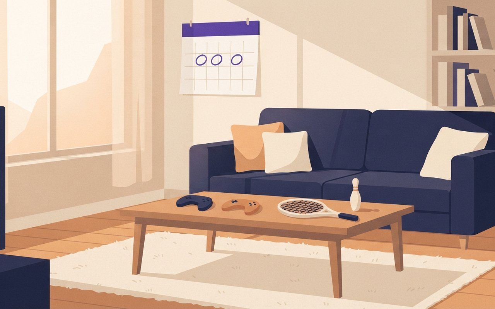
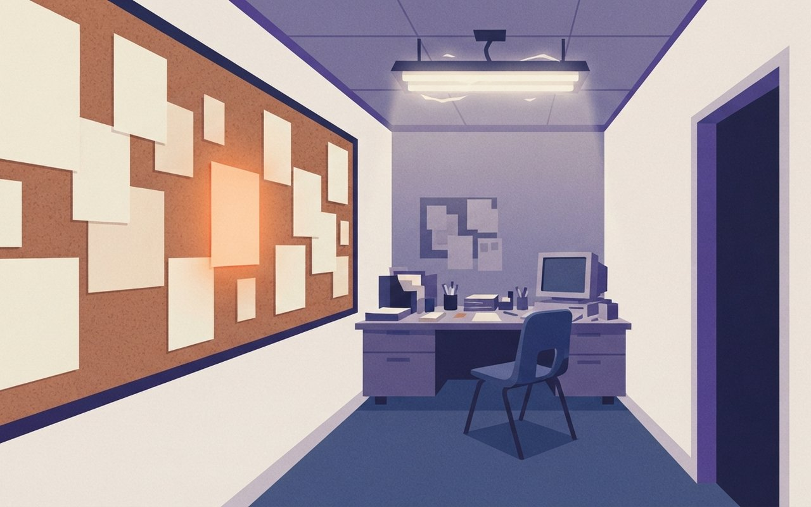

2026년 10월 21일 수요일 · OTT·게임·웹툰 브리프6 Picks · 순위 1 · 게임 2 · 시리즈 3
오늘 발표된 넷플릭스 글로벌 톱10에서 SBS 〈닥터X〉가 비영어 쇼 1위를 2주째 지켰습니다. 23일에는 한반도를 무대로 한 〈콜 오브 듀티: 모던 워페어 4〉가 나오고, 스위치 2 신작이 11월 초까지 이어집니다. 웨이브 〈여름방학〉(26일), 넷플릭스 〈꿀알바〉(30일), 웹툰 원작 디즈니+ 〈재혼 황후〉(11월 4일)의 공개일도 정리했습니다. 이번 호에는 본문까지 확인된 웹툰 완결 소식이 없어 싣지 않았습니다.
🎧 듣기 · 약 2분
🎧 낭독 원고 보기
SBS 드라마 닥터X가 시청수 710만으로 넷플릭스 비영어 쇼 1위를 2주째 지켰습니다. 10월 21일 수요일, OTT·게임·웹툰 브리프입니다. 오늘은 여섯 가지 소식을 전해 드립니다.
먼저 순위입니다. 오늘 발표된 넷플릭스 글로벌 톱10에서 닥터X는 한국과 필리핀 등 7개국에서 1위, 48개국에서 톱10에 들었습니다. 2위는 넷플릭스 오리지널 나를 충전해줘로 640만, 4위는 tvN 100일의 거짓말로 280만이었습니다. 시청수는 시청 시간을 러닝타임으로 나눈 값이라, 순위와 국가 수를 함께 보시면 좋습니다.
게임입니다. 콜 오브 듀티 모던 워페어 4가 23일 PC와 PS5, 엑스박스, 닌텐도 스위치 2로 나옵니다. 북한군의 남침으로 시작하는 한반도 전면전이 캠페인의 무대이고, PS 스토어 한국 기준 PS5 스탠다드 에디션은 8만 8,900원입니다. 스위치 2에서는 22일 스위치 스포츠 리조트, 11월 5일 젤다의 전설 시간의 오카리나, 6일 시프트업의 스텔라 블레이드 컴플리트 에디션이 차례로 나옵니다. 스텔라 블레이드 실물판은 카트리지에 게임 전체가 들어 있어 추가 다운로드가 필요 없습니다.
공개 예정 시리즈입니다. 웨이브 드라마 여름방학은 26일 밤 10시 50분에 단독 공개됩니다. 열여덟 살 고등학생이 시골 마을 우포리에서 보내는 여름을 그린 청춘 로맨스입니다. 넷플릭스 꿀알바는 30일 8부작 전편이 한꺼번에 공개됩니다. 시급 50배부터 시작하는 일자리만 소개하는 수상한 인력사무소가 무대인 호러입니다. 마지막으로 웹툰 원작 재혼 황후가 11월 4일 디즈니플러스에서 공개됩니다. 부산국제영화제에서 먼저 선보였고, 관객과의 대화와 무대인사 행사는 예매와 동시에 매진됐습니다.
지금까지 10월 21일 OTT·게임·웹툰 브리프였습니다. 가격과 공개 시각은 바뀔 수 있으니 카드의 출처와 각 스토어에서 확인해 주세요. 좋은 하루 보내세요.
Ranking — 이번 주 화제작 순위
位
48개국 톱10
〈닥터X〉 넷플릭스 비영어 쇼 2주 연속 1위 — 시청수 710만, 48개국 톱10
넷플릭스가 21일 발표한 글로벌 톱10(10월 12~18일 집계)에서 SBS 〈닥터X: 하얀 마피아의 시대〉가 시청수 710만으로 비영어 쇼 부문 1위에 올랐다. 2주 연속 1위이고, 한국·필리핀·베트남·인도네시아 등 7개국에서 1위, 48개국에서 톱10에 들었다(이투데이·SPOTV뉴스).
2위는 김영광·채수빈 주연의 넷플릭스 오리지널 〈나를 충전해줘〉(640만), 4위는 김유정·박진영 주연의 tvN 〈100일의 거짓말〉(280만)이다. 3위 작품은 두 기사에 나오지 않아 적지 않았다. 〈닥터X〉의 국내 시청률은 4회 18.5%(닐슨코리아 전국)를 기록했다.
집계넷플릭스 글로벌 톱10 비영어 쇼 · 2026.10.12 ~ 10.18 (10/21 발표)
예능 화제성펀덱스 10월 3주(10/12~18) TV-OTT 비드라마 2위 쿠팡플레이 〈직장인들 시즌3〉 (1위 MBC 〈신인감독 김연경2〉)
📺 알고 보면 달라지는 것
넷플릭스의 '시청수'는 몇 명이 봤는지가 아니라 총 시청 시간을 작품 러닝타임으로 나눈 값이다. 그래서 회차가 많아 러닝타임이 긴 작품은 같은 시간을 봐도 시청수가 낮게 잡힌다. 작품끼리 비교할 때는 시청수와 함께 순위 유지 주수, 톱10에 든 나라 수를 같이 보면 덜 헷갈린다.
이투데이 — 톱10·시청수SPOTV뉴스 — 비영어 쇼 순위마이데일리 — 펀덱스 비드라마시청수·7개국·48개국·2주 연속은 이투데이(10/21 09:15)·SPOTV뉴스(10/21 10:02) 일치 · 〈나를 충전해줘〉 64개국·〈100일의 거짓말〉 22개국 톱10은 이투데이 단일 · 1회 시청률은 매체별 표기 불일치(11.4%·11.9%)라 뺐고, 첫 방송일도 두 기사가 달라 뺐다 · 펀덱스는 마이데일리(10/21 11:14) (확인 2026-10-21)
닥터X, 넷플릭스 비영어 쇼 2주째 1위
닥터X가 시청수 710만으로 넷플릭스 비영어 쇼 1위를 2주째 지켰어요. 48개국 톱10에 들었고, 2위는 640만의 나를 충전해줘예요.
닥터X:710|나를 충전해줘:640|100일의 거짓말:280
48개국|톱10 진입
Game — 이번 주부터 나오는 신작
戰
PS4 미지원
〈콜 오브 듀티: 모던 워페어 4〉 23일 출시 — PC·PS5·Xbox·스위치 2 동시, PS5 스탠다드 88,900원
〈콜 오브 듀티: 모던 워페어 4〉가 23일 PC, PS5, Xbox Series X|S, 닌텐도 스위치 2로 동시에 나온다(게임메카). 플레이스테이션 스토어 한국 페이지에는 출시 시각이 10월 22일 15:00(UTC)로 올라 있어, 한국 시각으로는 23일 0시다. 스토어 페이지에 따르면 PS4로는 이용할 수 없다.
게임메카에 따르면 캠페인은 북한군의 남침으로 시작하는 한반도 전면전을 다루고, 플레이어는 신병 박현준 이병을 조작한다. 멀티플레이 맵은 12개이고, DMZ 모드의 무대는 '하진 통제 구역'이다. 가격은 PS 스토어 한국 기준 PS5 스탠다드 88,900원, 볼트 에디션 121,900원(예약 구매 표시 가격)이며, 등급은 청소년이용불가다.
출시10월 23일 0시(한국) — PS 스토어 표기 10/22 15:00 UTC ⚠ 변동 가능
기종PC · PS5 · Xbox Series X|S · 닌텐도 스위치 2 (PS4 미지원)
가격(PS5)스탠다드 88,900원 · 볼트 에디션 121,900원 — PS 스토어 한국 ⚠ 변동 가능 · 다른 기종 가격은 각 스토어 확인
등급·언어청소년이용불가 · 스토어 지원 언어에 한국어 포함
📺 알고 보면 달라지는 것
같은 날 4개 기종으로 나오지만 PS4 판은 없다. 위에 적은 가격은 PS5판 기준이라 PC·Xbox·스위치 2 가격은 스토어마다 따로 봐야 한다. 스토어의 22일 표기는 UTC 기준이라, 한국에서는 23일 0시에 열린다.
게임메카 — 출시일·캠페인PS 스토어 — 가격·등급출시일 23일·4개 기종·캠페인·맵 12개·DMZ '하진 통제 구역'은 게임메카(10/14 17:45) · 가격·등급·PS4 미지원·한국어 지원·출시 시각(10/22 15:00 UTC = 한국 23일 0시)은 PS 스토어 한국 페이지(확인 10/21) · Xbox·PC·스위치 2 가격 미확인 (확인 2026-10-21)
모던 워페어 4, 23일 4개 기종 출시
콜 오브 듀티 모던 워페어 4가 23일 PC·PS5·Xbox·스위치 2로 나와요. 한반도 전면전이 캠페인 무대고, PS5 스탠다드는 88,900원이에요.
88,900원|PS5 스탠다드
遊
스위치 2 달력
스위치 2 신작 달력 — 22일 〈스위치 스포츠 리조트〉, 11월 5일 〈시간의 오카리나〉, 6일 〈스텔라 블레이드〉
한국닌텐도 발매 일정표에 따르면 22일 〈Nintendo Switch Sports Resort〉, 11월 5일 〈젤다의 전설 시간의 오카리나〉, 11월 6일 〈Stellar Blade 컴플리트 에디션〉이 패키지와 다운로드로 나온다. 세 작품 모두 스위치 2용이다(VGC 출시 일정). 22일에는 〈FINAL FANTASY RESONANCE〉도 함께 나온다.
〈스텔라 블레이드〉는 국내 개발사 시프트업이 11월 6일 스위치 2 버전을 전 세계에 동시 출시하는 것이다. 본편에 〈니어: 오토마타〉·〈승리의 여신: 니케〉 콜라보 DLC가 들어 있고, 실물판은 게임 데이터 전체가 카트리지에 담겨 별도 다운로드 없이 할 수 있다(바이라인네트워크). 세 작품의 한국 가격은 일정표와 기사에 없어 적지 않았다.
10월 22일Nintendo Switch Sports Resort (한국닌텐도) · FINAL FANTASY RESONANCE ⚠ 변동 가능
11월 5일젤다의 전설 시간의 오카리나 (한국닌텐도)
11월 6일Stellar Blade 컴플리트 에디션 (시프트업) — 본편 + 콜라보 DLC, 실물판 카트리지에 전체 수록
가격일정표·기사에 없음 — 닌텐도 e숍 확인 권장
📺 알고 보면 달라지는 것
스위치 2 실물판 중에는 카드에 게임 대신 내려받기 열쇠만 담긴 '게임키 카드'도 있다. 기사가 〈스텔라 블레이드〉에 대해 "별도의 게임키 카드나 추가 다운로드 없이" 카트리지만으로 할 수 있다고 굳이 밝힌 이유다. 실물판을 살 때는 이 표시를 보면 저장 공간과 중고 거래 여부를 가늠할 수 있다.
한국닌텐도 — 발매 일정바이라인네트워크 — 스텔라 블레이드VGC — 출시 기종발매일·퍼블리셔·패키지/다운로드는 한국닌텐도 일정표(확인 10/21) · 스위치 2 전용 표기는 VGC 출시 일정 · 스텔라 블레이드 구성·카트리지는 바이라인네트워크(9/10 18:30) · 한국 가격 3종 모두 미확인 (확인 2026-10-21)
스위치 2 신작, 22일부터 차례로
22일 스위치 스포츠 리조트를 시작으로 11월 5일 젤다 시간의 오카리나, 6일 스텔라 블레이드가 나와요. 가격은 e숍에서 확인해야 해요.
10/22
A cozy living room in warm afternoon light, two small generic game controllers with simple shapes resting on a wooden coffee table next to a toy tennis racket and a tiny bowling pin, a blank paper wall calendar with three purple circles, no numbers, no screens, no people, no brand logos, no text

Series — 다음 2주 공개 예정
夏
웨이브 단독
열여덟 살의 시골 여름 — 웨이브 드라마 〈여름방학〉 26일 밤 10시 50분 공개
웨이브가 26일 오후 10시 50분 드라마 〈여름방학〉을 OTT 단독 공개하고, 라이프타임 채널에서도 방송한다(텐아시아·일간스포츠). 평범한 열여덟 살 고등학생 김하연(조이현)이 여름방학을 맞아 시골 마을 우포리로 내려간 뒤 종갓집 종손 조유겸(진영)을 만나며 벌어지는 청춘 로맨스다.
류해준이 하연의 오빠인 대학생 김정연을 맡는다. 같은 주 웨이브에서는 23일 아이돌 밴드를 배경으로 한 〈각설탕소리〉도 단독 공개된다(일간스포츠 10월 라인업). 회차 수는 기사에 없어 적지 않았다.
공개10월 26일 오후 10시 50분 · 웨이브 OTT 단독 + 라이프타임 채널 방송 ⚠ 변동 가능
출연조이현(김하연) · 진영(조유겸) · 류해준(김정연)
장르청춘 로맨스 · 열여덟 살 · 시골 마을 우포리
같은 주웨이브 〈각설탕소리〉 10월 23일 단독 공개
📺 알고 보면 달라지는 것
OTT 단독 공개와 케이블 채널 방송을 함께 하는 방식이라, 웨이브를 구독하지 않아도 라이프타임 편성으로 볼 수 있다. 다만 기사에 나온 시각은 웨이브 공개 시각이고 채널 방송 시각은 없으니 편성표를 따로 확인해야 한다.
텐아시아 — 공개일·줄거리일간스포츠 — 류해준 합류일간스포츠 — 웨이브 10월 라인업26일 오후 10시 50분·웨이브 단독·라이프타임·줄거리는 텐아시아(10/14 08:52)·일간스포츠(10/14 15:32) 일치 · 진영(조유겸)과 〈각설탕소리〉 23일은 일간스포츠 10월 라인업(9/30 22:30) 단일 · 회차 수·연출 미확인 (확인 2026-10-21)
시골 우포리의 여름, 26일 웨이브 공개
평범한 고등학생이 여름방학에 시골 마을 우포리로 내려가며 시작되는 청춘 로맨스예요. 26일 밤 10시 50분 웨이브에서 단독 공개돼요.
10/26
밤 10시 50분 / 웨이브 단독
A quiet Korean countryside village at the end of summer, a traditional Korean hanok house with dark curved giwa tile roof, white plastered walls and a low stone-and-earth wall, a bicycle leaning on the wall, green rice paddies under a soft evening sky, Korean rural scenery, not Japanese architecture, no people, no text
雇
생계형 호러
시급 50배짜리 일자리의 정체 — 넷플릭스 〈꿀알바〉 30일 8부작 전편 공개
넷플릭스 오리지널 시리즈 〈꿀알바〉가 30일 8부작 전편을 한꺼번에 공개한다(TV리포트·텐아시아). '시급 50배'부터 시작하는 일자리만 소개하는 수상한 인력사무소를 배경으로, 청년 혁준(이재욱)이 악몽 같은 노동 현장에 들어가며 겪는 이야기를 그린 '생계형 밥벌이 호러'다.
김다민 감독이 연출하고 한준희가 기획총괄을 맡았으며, 고민시·김민하·이희준이 함께 출연한다. 8일 제31회 부산국제영화제에서 오픈토크를 열었다.
공개10월 30일 · 넷플릭스 · 8부작 전편 동시 공개 ⚠ 변동 가능
설정시급 50배부터 시작하는 일자리만 소개하는 인력사무소
만든 사람연출 김다민 · 기획총괄 한준희
출연이재욱(혁준) · 고민시 · 김민하 · 이희준
📺 알고 보면 달라지는 것
공포의 출발점이 귀신이 아니라 '너무 좋은 조건'이라는 점이 이 작품의 장치다. '생계형 밥벌이 호러'라는 이름처럼 무서움의 재료가 일자리와 돈이다. 공개된 소개는 여기까지라, 일자리의 정체는 직접 보며 확인하는 게 좋다.
TV리포트 — 8부작·로그라인텐아시아 — 30일 전편 공개30일 공개·시급 50배·인력사무소·연출/기획은 TV리포트(10/8)·텐아시아(10/8 15:49) 일치 · 8부작은 TV리포트 · 두 기사 모두 "오는 30일"이라 10월은 기사 날짜로 확인 · 공개 시각 미확인 (확인 2026-10-21)
수상한 인력사무소, 30일 넷플 전편 공개
시급 50배부터 시작하는 일자리만 소개하는 인력사무소가 무대인 호러 시리즈예요. 30일 넷플릭스에서 8부작 전편이 한꺼번에 공개돼요.
10/30
8부작|전편 동시 공개
A narrow fluorescent-lit staffing agency office late at night, a corkboard wall covered with blank flyers with no writing, one blank flyer glowing red, an empty plastic chair in front of a cluttered desk, a flickering ceiling light, uneasy quiet atmosphere, no people, no text, no letters

婚
웹툰 실사화
본편 완결 웹툰 〈재혼 황후〉 실사화 — 부산영화제서 먼저 공개, 11월 4일 디즈니+
디즈니+ 오리지널 시리즈 〈재혼 황후〉가 11월 4일 공개된다. 동대제국의 황후 나비에(신민아)가 도망 노예 라스타(이세영)에게 빠진 황제 소비에슈(주지훈)에게 이혼을 통보받은 뒤 서왕국 왕자 하인리(이종석)와의 재혼을 요구하며 벌어지는 로맨스 판타지다(아이즈).
제31회 부산국제영화제 '온 스크린' 섹션에 초청돼 9·10일 관객과의 대화(GV)와 10일 야외 무대인사를 열었고, 모든 행사가 예매 시작과 동시에 매진됐다(아이즈). 원작은 네이버의 웹소설·웹툰으로, 웹툰 본편은 2026년 1월 15일 완결됐다(에스콰이어). 연출은 조수원 감독이다.
공개11월 4일 · 디즈니+ ⚠ 변동 가능
원작네이버 웹소설·웹툰 〈재혼 황후〉 — 웹툰 본편 2026.1.15 완결
먼저 공개제31회 부산국제영화제 온 스크린 · GV 10월 9·10일, 무대인사 10일 — 전 행사 매진
출연·연출신민아 · 주지훈 · 이종석 · 이세영 / 조수원 감독
📺 알고 보면 달라지는 것
웹툰 본편이 이미 끝나 결말을 아는 원작 독자가 많다. 드라마가 원작을 어디까지 따를지는 공개 전이라 알 수 없다. 원작을 아직 안 봤다면 결말을 피해 드라마부터 보고, 원작 독자라면 웹툰 장면이 실사 의상·세트로 어떻게 옮겨졌는지를 보는 재미가 있다.
아이즈 — 부산영화제 공개·줄거리에스콰이어 — 원작 웹툰 완결11월 4일·줄거리·BIFF 온 스크린·GV/무대인사 매진·조수원 감독은 아이즈(10/13 09:06) · 원작 네이버 웹소설·웹툰과 본편 완결일은 에스콰이어(7/30) 단일 · 예고편 조회수 기사는 배급사 자료 중심이라 쓰지 않음 · 회차 수 미확인 (확인 2026-10-21)
웹툰 재혼 황후, 11월 4일 디즈니+
본편이 완결된 웹툰 재혼 황후가 드라마로 나와요. 부산영화제 행사는 예매와 동시에 매진됐고, 11월 4일 디즈니+에서 공개돼요.
11/4
An empty candlelit palace ballroom at dusk, two ornate thrones standing apart on a marble floor, a single golden crown resting on a velvet cushion between them, an unopened sealed letter on the steps, tall windows with heavy curtains, no people